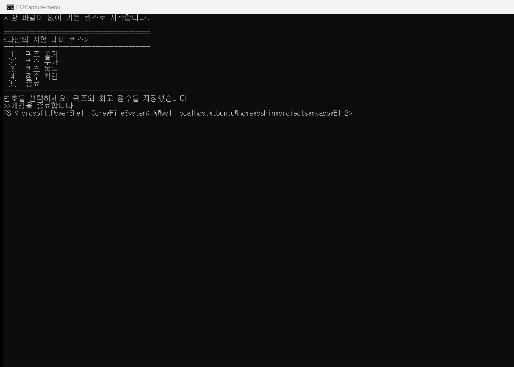
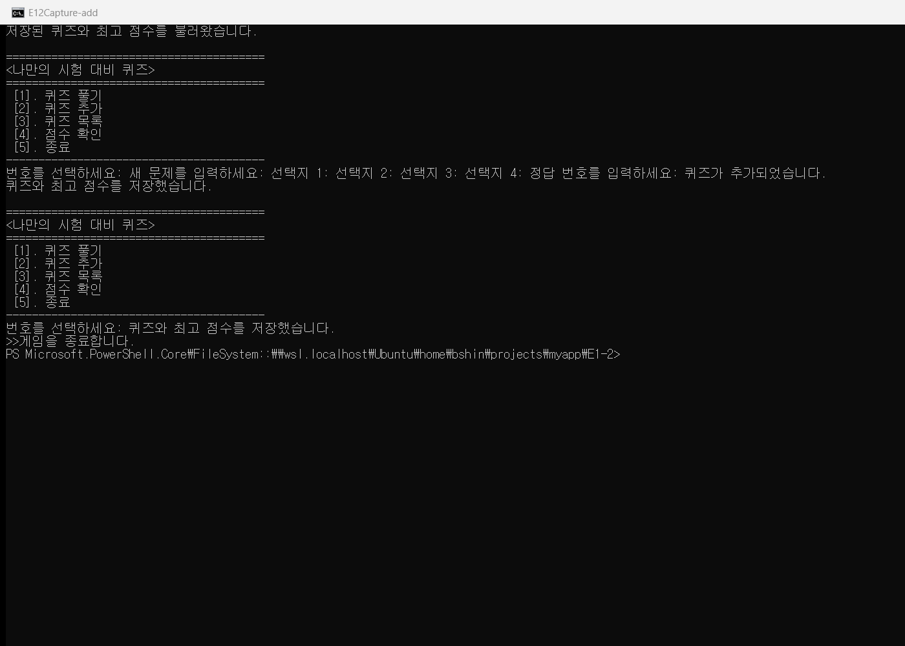
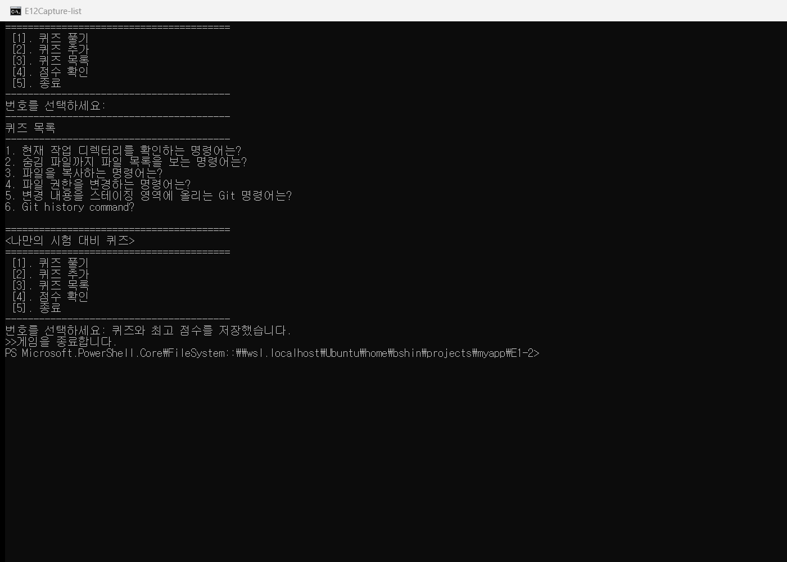
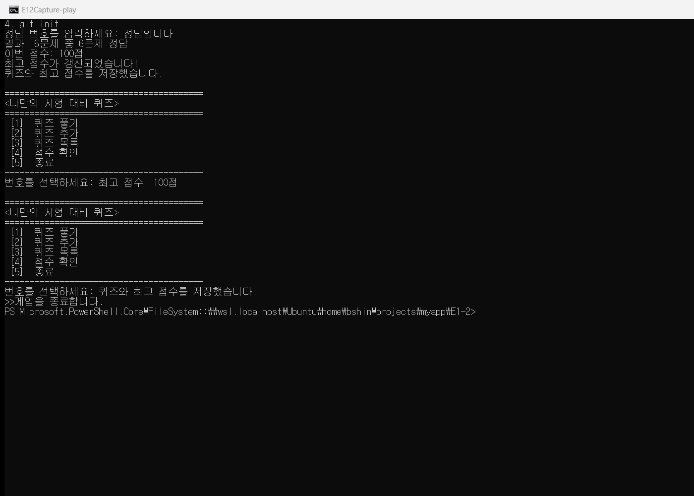
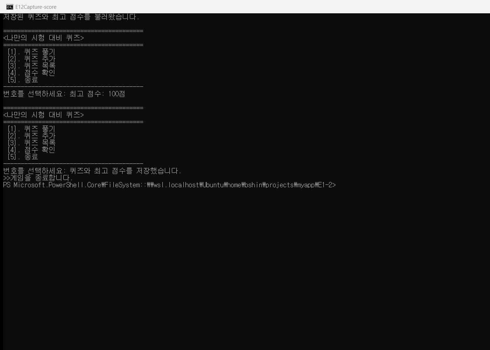
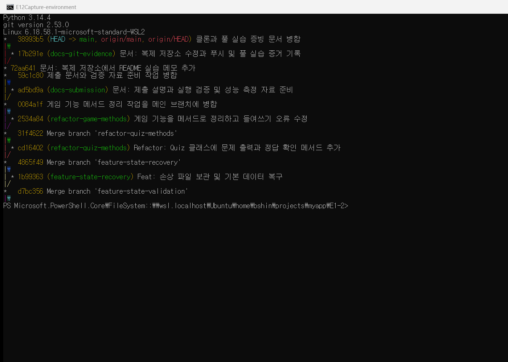

Python 표준 라이브러리만으로 만든 터미널용 4지선다 퀴즈 게임. 배운 명령어를 반복 복습하고, 객체지향 설계·데이터 저장·Git 협업까지 한 번에 담았습니다.
제목을 누르면 해당 슬라이드로 바로 이동합니다. 발표 중에는 ← → 또는 하단 버튼으로 넘길 수 있습니다. N 키를 누르면 현재 슬라이드의 발표 대본을 볼 수 있습니다.
json · pathlib · datetime)만 사용pwd · ls -a · cp · chmod · git addgit clone 후 python3 main.py 한 줄이면 끝. 저장 파일은 실행 위치가 아니라 main.py가 있는 폴더에 둡니다.
메뉴에서 1. 퀴즈 풀기를 고르면 전체 문제를 무작위 순서로 출제하고, 정·오답을 안내한 뒤 점수와 최고 점수 갱신 여부를 보여 줍니다.
======================================== <나만의 시험 대비 퀴즈> ======================================== [1]. 퀴즈 풀기 [2]. 퀴즈 추가 [3]. 퀴즈 목록 [4]. 점수 확인 [5]. 종료 ---------------------------------------- 번호를 선택하세요: 1 현재 작업 디렉터리를 확인하는 명령어는? 1. ls 2. pwd 3. cd 4. mkdir 정답 번호를 입력하세요: 2 정답입니다 ... (5문제 출제) ... 결과: 5문제 중 4문제 정답 이번 점수: 80점 최고 점수가 갱신되었습니다!
전체 문제 무작위 출제 → 정·오답 안내 → 결과·점수 표시. 끝나면 즉시 저장.
문제·선택지 4개·정답 번호 입력. 등록 완료 직후 저장.
번호와 질문을 나열. 목록이 비면 안내 문구 출력.
최고 점수 표시. 플레이 전 상태(None)와 0점을 구분.
저장을 시도한 뒤 종료. Ctrl+C·EOF 시에도 저장을 시도합니다.
round(정답 수 / 전체 수 × 100) — 100점 기준으로 최고 점수와 비교합니다.
문제 하나의 정보(question, choices, answer)를 담고,
display()로 출력, check_answer()로 정답을 확인합니다.
퀴즈 목록과 최고 점수를 속성으로 두고, 메뉴·플레이·추가·목록·점수·저장·불러오기·종료를 메서드로 관리합니다.
class Quiz:
def __init__(self, question, choices, answer):
self.question = question
self.choices = choices
self.answer = answer
def display(self): ...
def check_answer(self, user_answer):
return user_answer == self.answer
여러 Quiz 객체가 같은 출력·정답 확인 코드를 재사용하고, QuizGame이 전체 게임 상태를 관리합니다. 관련 데이터와 동작을 묶기 위해 클래스를 선택했습니다.
저장 형식이 바뀌어도 정답 판정 코드에 영향을 덜 주도록 역할별로 함수를 나눴습니다.
get_number · get_menu_choice · get_text — 변환·범위·빈 문자열을 검사하고 재입력받습니다.
play_quiz — 문제 출력, 답변 입력, 정·오답 안내를 담당합니다.
save_state · load_state · validate_state · backup_corrupt_state — 저장·검증·복구를 맡습니다.
if __name__ == "__main__": 아래 코드는 직접 실행할 때만 동작하므로, 테스트가 클래스를 import 해도 메뉴가 실행되지 않습니다.
{
"quizzes": [
{
"question": "현재 작업 디렉터리를…",
"choices": ["ls","pwd","cd","mkdir"],
"answer": 2
}
],
"best_score": null
}
finallyensure_ascii=False 로 UTF-8 저장Ctrl+C(KeyboardInterrupt) · EOF(Ctrl+D)를 잡아 안내finally에서 다시 저장을 시도 — 미완성 문제·끝내지 않은 게임 점수는 반영하지 않음try:
while True: ... # 메뉴 루프
except KeyboardInterrupt: ... # Ctrl+C
except EOFError: ... # 입력 종료
finally:
self.save() # 가능한 데이터 저장 후 종료
| 상황 | 처리 |
|---|---|
| 파일 없음 | 기본 퀴즈로 시작, 다음 저장에서 생성 |
| 문법·인코딩·자료형·범위 오류 | 원본을 state.corrupt-날짜-시간.json으로 보관 후 초기화 |
| 보관 실패 | 저장 전 검사가 손상 파일의 덮어쓰기를 차단 |
| 읽기 / 쓰기 실패 | 원인을 안내하고 기본 퀴즈로 진행 |
저장 전 기존 파일을 validate_state로 먼저 검사해, 정상 파일을 손상 데이터로 덮어쓰지 않습니다. 손상 파일 보관은 자동 복원이 아니라 원본 보존이며, 복구는 종료 상태에서 수동으로 진행합니다.
SIGINT 전달 후 종료 확인mock으로 재현임시 폴더에서 실행해 실제 state.json을 건드리지 않습니다. Python 3.14.4 / WSL2 기준 Ran 14 tests in 1.000s — OK
짧은 한글 문제를 크기별로 생성해 임시 폴더에서 10회 측정한 중앙값입니다.
| 문제 수 | 파일 크기 | 저장(ms) | 불러오기(ms) | 저장 시간 비교 |
|---|---|---|---|---|
| 5 | 1.2 KB | 0.214 | 0.074 | |
| 1,000 | 223 KB | 17.921 | 4.229 | |
| 10,000 | 2.2 MB | 206.208 | 53.075 |
저장·불러오기·목록 순회 모두 O(n)이며 전체 목록을 메모리에 보관합니다. 검색 메뉴를 추가한다면 식별자와 딕셔너리 인덱스를, 더 큰 데이터라면 목록 페이지 나누기·SQLite를 검토할 여지가 있습니다.
Feat: 기능 · Fix: 수정 · Docs: 문서 · Refactor: 구조. 병합은 --no-ff로 기록을 남깁니다.
별도 폴더에 clone → README 수정·push → 기존 폴더에서 pull --ff-only로 반영. 실제 출력을 docs에 기록.
각 항목을 코드 또는 문서 증거와 연결했습니다. 코드 문서
메뉴·추가·목록·플레이·재실행 점수·환경/Git 스크린샷 6장을 첨부했습니다. 캡처는 랜덤 출제 추가 전 버전이며 현재 무작위 순서의 증거로 사용하지 않습니다.
표준 라이브러리 random.shuffle()로 플레이 시작마다 출제 순서를 섞습니다.
play_order = self.quizzes.copy()
random.shuffle(play_order)
for current_quiz in play_order:
result = play_quiz(current_quiz)추가 검증: 섞인 순서로 출제되는지, 원본·저장 순서가 유지되는지, 매 플레이마다 섞기가 호출되는지 확인했습니다. 총 14개 테스트 통과.
이미지를 누르면 원본을 엽니다. 임시 복사본의 실제 콘솔 창을 촬영했습니다.






자동 입력을 사용하므로 입력 글자는 별도로 에코되지 않습니다. 랜덤 출제 추가 전 캡처입니다. 최신 검증 결과 · 캡처 설명
읽어 주셔서 감사합니다.